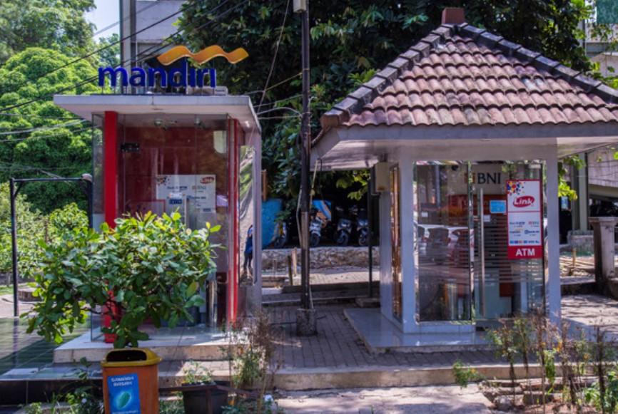

Campus Facilities
Beberapa fasilitas yang tersedia di PNJ.

Lapangan Mini Soccer
PNJ memiliki fasilitas olahraga untuk mendukung kegiatan fisik dan kesehatan mahasiswa.
Perpustakaan PNJ
PNJ memiliki perpustakaan dengan koleksi buku yang lengkap.

Bus Kampus (Bipol)
PNJ menyediakan bus kampus untuk memudahkan mobilitas mahasiswa.
Sarana Ibadah
PNJ menyediakan sarana ibadah untuk memenuhi kebutuhan spiritual mahasiswa.

Automatic Teller Machine (ATM)
PNJ memiliki fasilitas ATM yang dapat digunakan untuk pembayaran SPP melalui auto debet ATM.